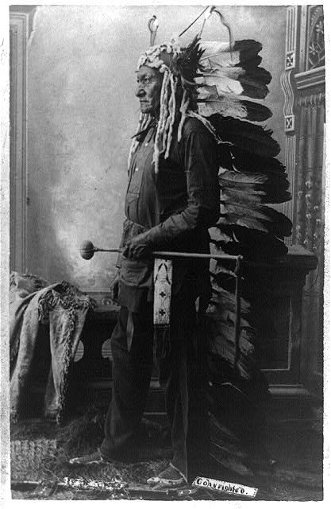

Sitting Bull c. 1888.Sitting Bull, Tatanka Iyotake, was known best for his part in the Battle of the Little Bighorn. Before the battle, Sitting Bull had a vision of soldiers falling into camp. This vision reinforced the belief in the strength of Sitting Bull’s medicine. After Sitting Bull’s participation in the Custer battle the army pursued Sitting Bull, and early in 1877 the old Sioux medicine man and many of his followers fled to Canada. ...
Sitting Bull kept out of serious trouble until 1890. The Messiah Craze Ghost Dance had come into Indian country on most of the Sioux reservation in South Dakota. In the fall of 1890 the new religion came to Standing Rock and it was believed Sitting Bull was a supporter of the Ghost Dance. On December 15, 1890, Sitting Bull and seven of his followers were killed as well as six Indian police. The killing of Sitting Bull was one of the events, which led directly to the incident at Wounded Knee.
from: Sitting Bull College website.
Sitting Bull was born near the Grand and Missouri Rivers in currently South Dakota, sometime between 1831-1837; and was killed by Indian police on the Standing Rock reservation in South Dakota on December 15, 1890.